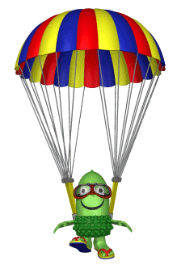
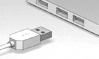

link do strony poczty link do strony pliku link do środka tekstu link do końca tekstu link do tabeli link do formularza Walidacja strony internetowej to ściśle
określone działania, mające na celu sprawdzenie czy
budowa strony zawiera błędy
Walidator HTML to specjalistyczny program
lub aplikacja służąca do sprawdzania znaczników
HTML na stronie internetowej pod kątem ewentualnych
błędów składniowych i leksykalnych
Maksim
Maksim
Maksim
Maksim
Maksim
Maksim
Maksim
Navumovich Navumovich Navumovich Navumovich Navumovich Navumovich :( smutek
:) uśmiech
:'( placz
:D duży uśmiech
:C duży smutek
>:( złość
24-138, Gdańsk, Puszkina, Dom Kolotuszkina, 13/24
Ulubiony aktor: Rian Gosling
Ulubiony zespół muzyczny: Nervy
Data urodzenia: 12 sierpnia 1814
link do strony poczty link do strony pliku link do początek tekstu link do końca tekstu link do tabeli link do formularza H2 SO4
Na2 CO3
x*x=x2
Dowcip o programiscie
Pytanie o szklankie
Dowcip o spadochronie
Osoba, która skacze ze spadochronem po raz pierwszy, mówi instruktorowi

- Boję się skoczyć - co jeśli spadochron się nie otworzy?
Dowcip o USB-A porcie
Twórca USB

Kiedy twórca portu USB-A umrze, jego grób zostanie najpierw opuszczony do dołu, a następnie podniesiony, odwrócony i ponownie opuszczony we właściwą stronę.
Nazwisko uznia imię uznia
Navumovich Maksim
© § ® £ ¶ ¨ ¡
poniżej są trzy wyliczenia z różnymi znakami wyliczenia
typu danych w JS:
poniżej są trzy numerowania z różnymi znakami numerowania
formatowanie tekstu
wytłuszczenie tekstu - <b></b>kursywa - <i></i>podkreślenie - <u></u>
przekreślenie - <strike></strike>formatowanie wyglądu czcionki - <font></font>
indeks dolny2 - <sub></sub>
indeks górny3 - <sup></sup>
spacja niełamliwa -  
poniżej będą trzy poziomy numerowania/wyliczenia z różnymi rodzajami numerowania/wyliczenia
Rodzaje USB
USB 1.0 - 2.0
USB-A
mini-A
micro-A
USB-B
USB 3.0 - 3.1
link do strony poczty link do strony pliku link do początek tekstu link do środka tekstu link do końca tekstu link do tabeli link do formularza